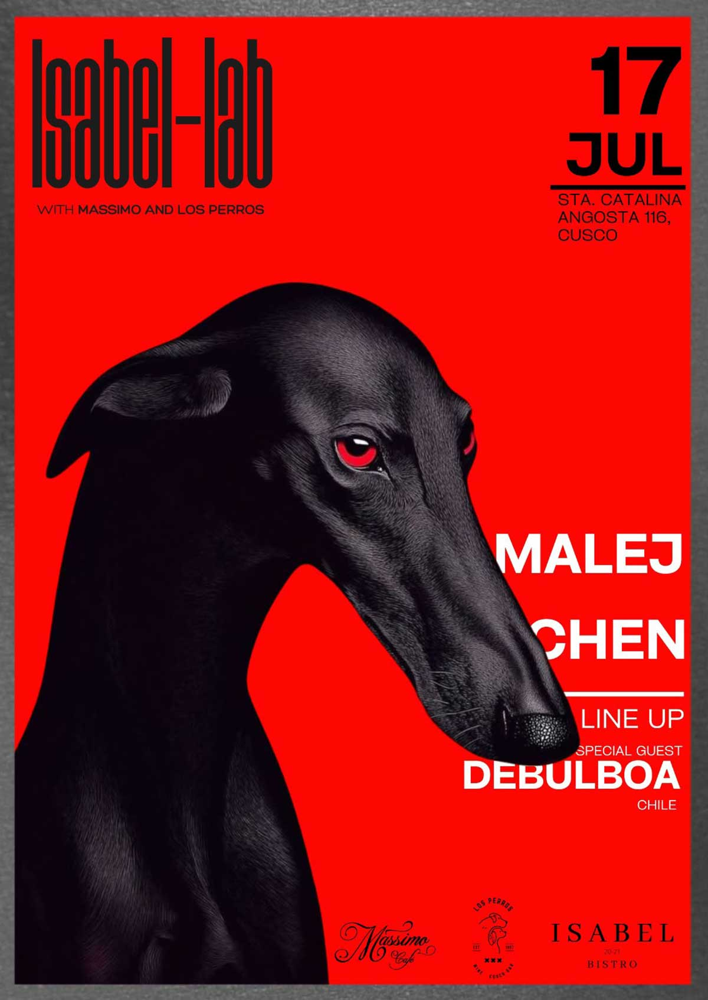

ISABEL-LAB
fecha: 17/07/26 hora: --pm
lugar: Mássimo Café,
Sta. Catalina Angosta 116, Cusco


ISABEL LAB with Massimo & Los Perros
LABORATORY 001
A new space for electronic music, curated experiences and meaningful connections.
Para esta primera edición presentamos un line up pensado para disfrutar el viaje de principio a fin.
Line up:
MALEJ
Chen
Special Guest: Bulboa 🇨🇱
📅 17 JULY 2026
📍 Massimo
Santa Catalina Angosta 116 · 2.º piso · Cusco
📲 Info & Reservations
+51 907 906 325
ISABEL LAB
For Those Who Know.